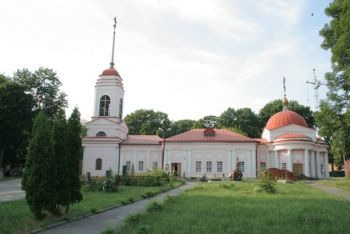
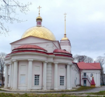

Достопримечательности Липецка


Евдокиевская церковь (Липецк)
Церковь во имя святой Евдокии (Евдокиевская) — православный храм, находится в центре города Липецка у площади Героев (адрес: улица Гагарина, 70).
Храм был построен в 1817—1818 годах «тщанием коллежского советника Ивана Фёдоровича Лобкова» во имя святой преподобномученицы Евдокии на погосте, возникшем в начале XIX века как кладбище Христорождественского собора. Сегодня это — Евдокиевское кладбище.
Изображения:
 
Евдокиевская церковь на карте: